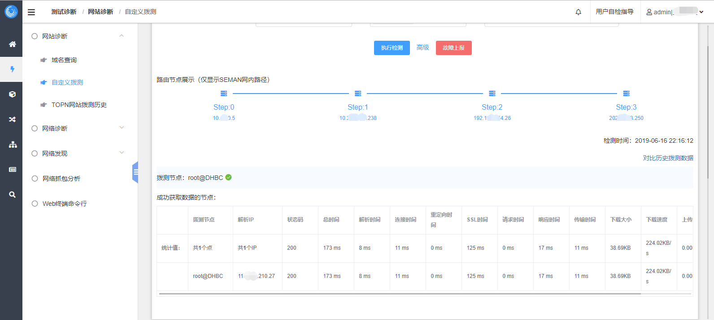
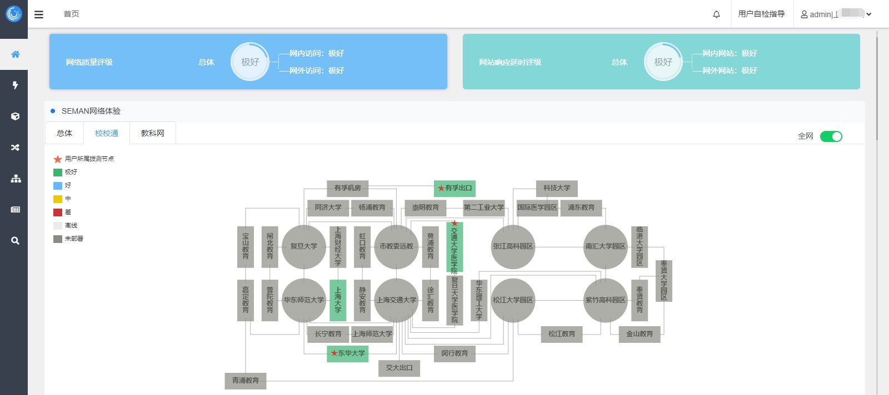
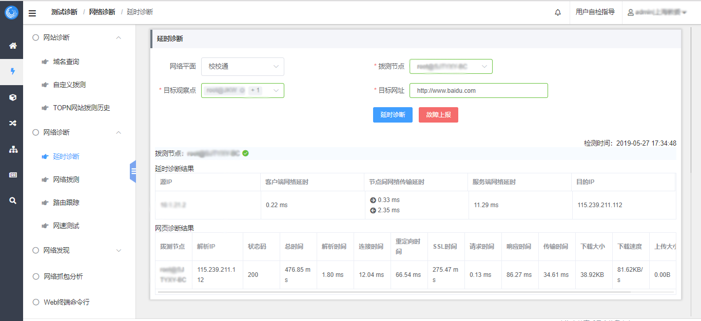
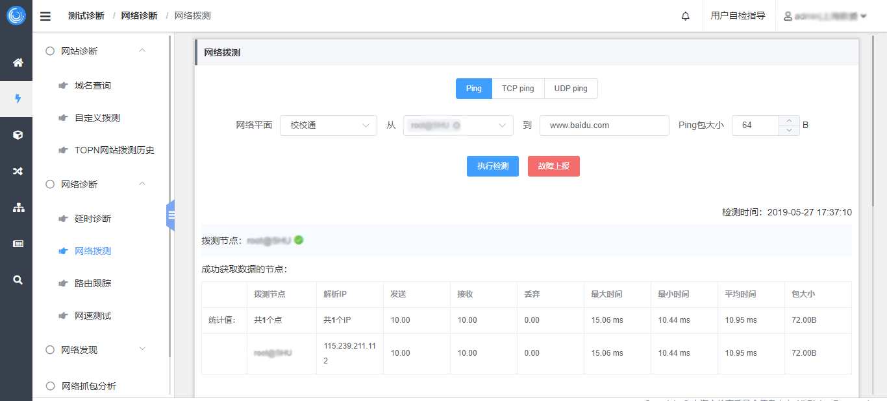

网络故障检测诊断平台
网络故障检测诊断平台由分布式的流量分析终端和大数据平台组件构成，覆盖业务拨测、网络拨测、延时诊断、抓包分析等手段，实现网络的自动检测和诊断，帮助运维人员快速定位问题边界，提高排障效率，并提供数据佐证。
主要功能
业务拨测，模拟业务应用请求
利用公共协议，如HTTP、RTSP、RTMP等，对业务应用进行模拟访问，获取应用服务状态和响应情况；若应用无响应或响应慢，可排除网络问题。


自动值守，主动探测全网
通过分布式部署，覆盖全网，自动拨测，帮助运维人员实时获悉业务应用和网络传输的可用性和性能，并发现异常
性能延时诊断
支持整合iProbe网络性能流量分析引擎，对网内业务请求进行会话跟踪和延时诊断，定位性能问题的故障区间。


全网自定义抓包
随时可对业务镜像流量中的指定业务会话进行抓包保存；并可在线分析，为应用故障排查提供可信的数据佐证
产品优势
全流量分析
从网络层到应用层进行网络会话分析，深入监测网络质量与服务性能

延迟分析诊断
定位延时异常的问题边界，网络层还是应用层；若是网络层则具体定位延时发生区间，是客户端接入侧还是汇聚到核心之间
全自动值守
按既定计划自动执行拨测任务，巡检网络质量或业务服务状态，发现丢包、重传或业务无响应的情况
可自定义抓包
对镜像流量中的指定业务会话进行抓包保存；并可在线分析，为应用故障排查提供可信的数据佐证